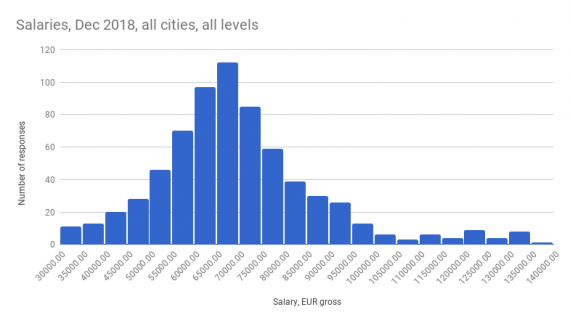
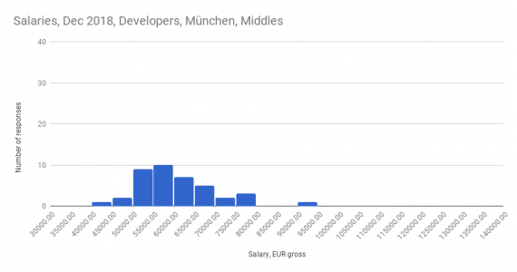
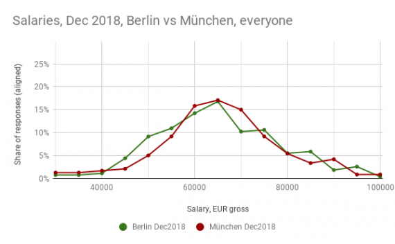

IT Salary Survey December 2018
In December 2018, the salary survey has managed to collect over 700 responses. Before that, there were the similar salary surveys of 2016 (250 responses) and 2017 (300 responses).
Traditionally, we start our analysis with how the average participant looks like.
Age
No major changes from the previous 2 years — the average age is 30-32.
{kind=link}
City
As usual — Berlin and München are the most represented cities.
{kind=link}
Gender
No change, almost equal to the last year.
{kind=link}
Skill Level
Note: there’s no way to check this data so the skill level is basically the question of self-identification.
{kind=link}
More
A few more charts to shed some light on an average participant:
{kind=link}
{kind=link}
Salaries
And here come the salaries.

However, this histogram is not very actionable. Too many criteria mixed & averaged.
{kind=link}
Instead, let’s take a look at the more fine-grained selections with a sufficient number of responses: Seniors vs. Middles, Berlin vs. München, overall vs. developers-only.
With this, the statistic becomes actionable — you can actually estimate your personal value based on your experience and skills relative to others, and project that value to the salary you deserve (also relative to others).
Salaries of IT in general
{kind=link}
{kind=link}
{kind=link}

As a very rough estimation of your deserved position on these histograms, you can use the histogram of the work experience of the respondents. However, keep in mind, that the experience and the salary levels do not always correlate, and the salary highly depends on the negotiation skills and some luck rather than solely on the professional competencies:
{kind=link}
{kind=link}
Salaries of the developers
Out of those respondents, the majority are the developers (425 out of 708, 60%) — as determined by the keywords in the job title. The developers are explicitly separated from the QA-related, management, and even the DevOps positions, even though most of them include some kind of software development.
{kind=link}
{kind=link}
Cities
The majority of responses are from Berlin & Munich: respectively, 274 and 240 out of 708 in total. There are so many of them, so we can build the comparison graphs of Berlin-vs-Munich salaries.

Worth mentioning, that the 2018 salaries in these two cities have finally aligned for the majority of respondents.
{kind=link}
For the developers, Berlin now gives the same income as München. Still, München still gives more for the non-developers, especially for the top-level non-developers (90% percentile) — i.e. the ceilings are higher there.
This is clearly seen in the overall stats, with the averages, medians, and even 95% percentiles for the developers being almost equal:
{kind=link}
Trends
And here is another most useful part of the salary survey — the salary trends over the past few years. This time, it is 2015-2018, i.e. 4 years in a row.
{kind=link}
{kind=link}
Raw data
If you want to see more slices — e.g. Juniors, other cities — or if you want to perform a row-by-row search on the job titles, here are few links:
* The raw data of the survey responses.
* The analytical spreadsheet.
Useful links
* Stack Overflow Developer Survey 2018
* I can recommend this book: Everything is Negotiable by Gavin Kennedy.
Hopefully, it will help you to negotiate the salary. Good luck!
Share
- Get link
- Other Apps
Share
- Get link
- Other Apps